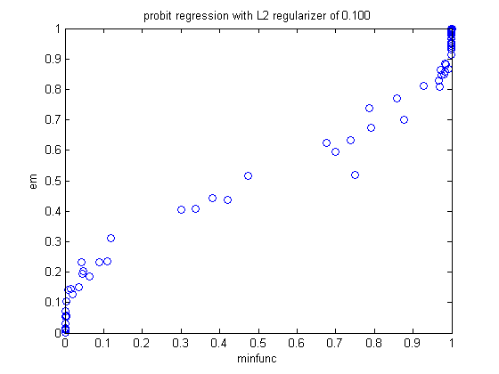
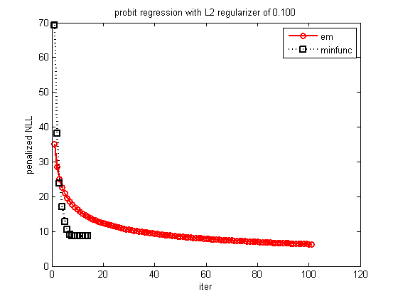

Probit Regression Demo
setSeed(0);
N = 100; D = 2;
X = randn(N,D);
w = randn(D,1);
y01 = double((X*w>0));
ypm1 = sign(y01-0.5);
lambdas = [1e-1];
for lambda=lambdas(:)'
funObj = @(w)ProbitLoss(w,X,ypm1);
options.display = 'off';
[wMinfunc, objMinfunc, exitflaf, output] = minFunc(@penalizedL2,zeros(D,1),options,funObj,lambda);
objTraceMinfunc = output.trace.fval;
probMinfunc = normcdf(X*wMinfunc);
objMinfunc2 = ProbitLoss(wMinfunc,X,ypm1) + (lambda)*sum(wMinfunc.^2);
[wEm, logpostTrace] = probitRegFitEm(X, ypm1, lambda);
probEm = normcdf(X*wEm);
objEm = ProbitLoss(wEm,X,ypm1) + (lambda)*sum(wEm.^2);
objTraceEm = -logpostTrace;
figure;plot(probMinfunc, probEm, 'o')
xlabel('minfunc'); ylabel('em');
title(sprintf('probit regression with L2 regularizer of %5.3f', lambda))
figure;
plot(objTraceEm, 'r-o', 'linewidth', 2);
hold on
plot(objTraceMinfunc, 'k:s', 'linewidth', 2);
legend('em', 'minfunc')
title(sprintf('probit regression with L2 regularizer of %5.3f', lambda))
ylabel('penalized NLL')
xlabel('iter')
printPmtkFigure('probitRegDemoNLL')
end
starting EM
iter 50, logpost = 12.759
iter 100, logpost = 12.436
 